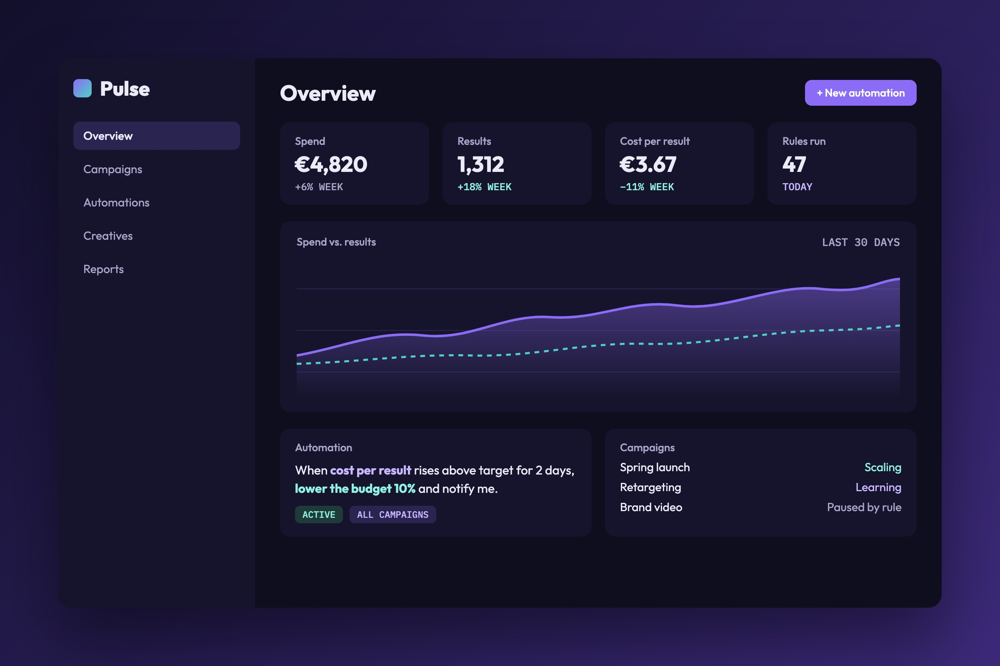
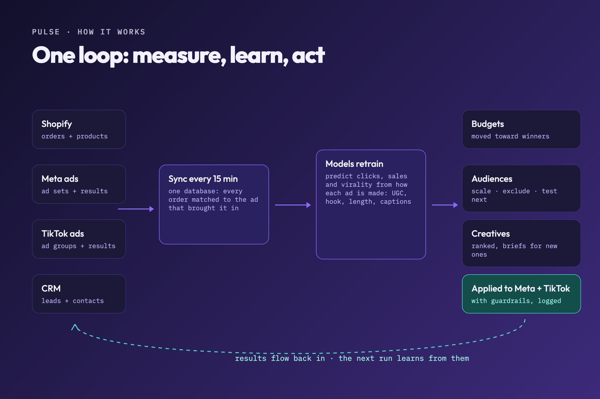
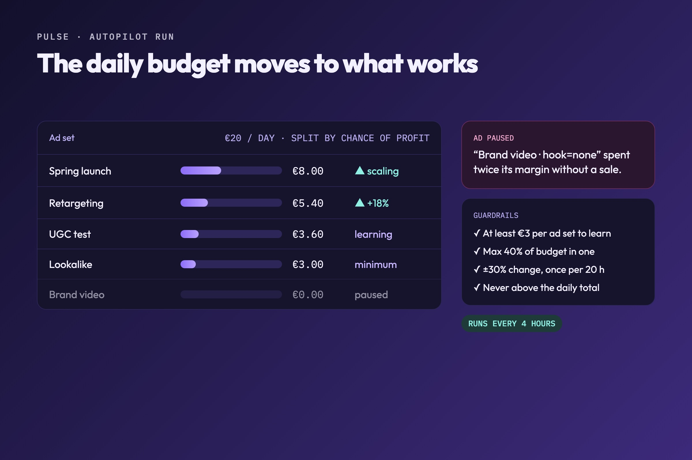
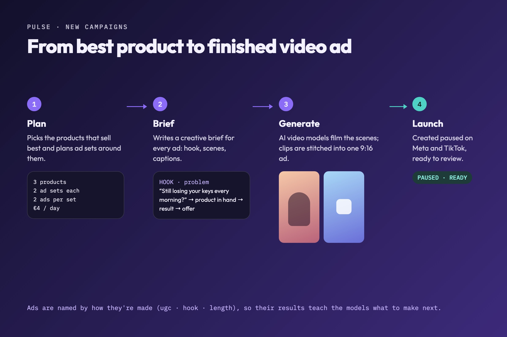

In progress
Pulse
Pulse runs the advertising for an online store on autopilot. It pulls in sales and ad results, learns which ads actually sell, moves the budget toward them and plans new campaigns, so a small daily budget keeps working without someone watching it all day.




Everything in one place
Every 15 minutes Pulse syncs products and orders from Shopify, campaigns and results from Meta and TikTok, and contacts from the CRM into one database. Each order is matched to the ad that brought it in, so every ad shows what it really earned, not just how many clicks it got.
It learns what sells
Three models retrain as new results come in: one predicts clicks, one sales and one how likely a video is to take off. They learn from how each ad is made (user-generated or not, the hook, the length, captions), so a new idea can be scored before anyone films it.
Autopilot, with guardrails
Every four hours it splits the daily budget across ad sets by how likely each one is to be profitable, pauses ads that spend money without selling, and logs every change. Every ad set keeps enough to keep learning, budgets move at most 30% a day, and the total never goes over the limit.
New campaigns, start to finish
Pulse plans new campaigns around the best-selling products, writes a creative brief for every ad, has AI video models generate short vertical ads from it, and creates the campaigns paused, ready for a final check. Their results flow back in and teach the next round.